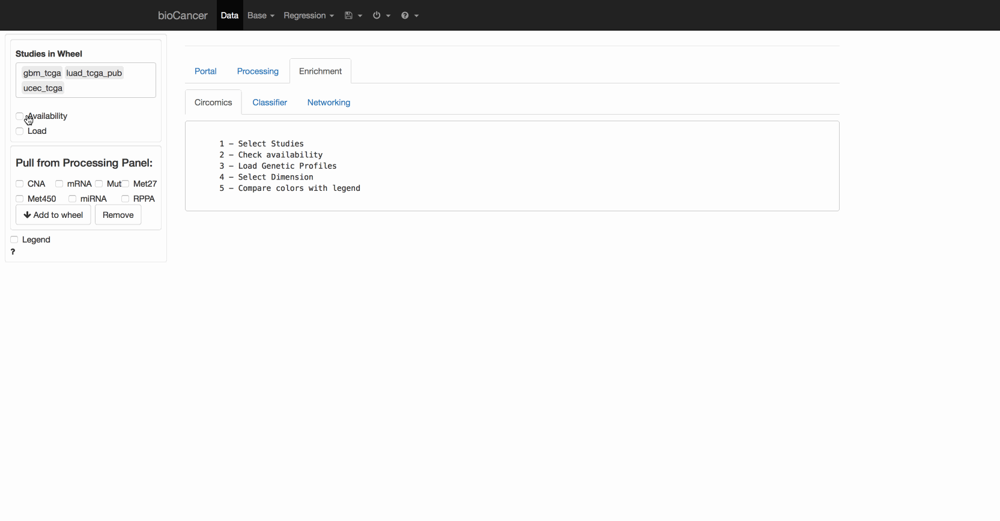
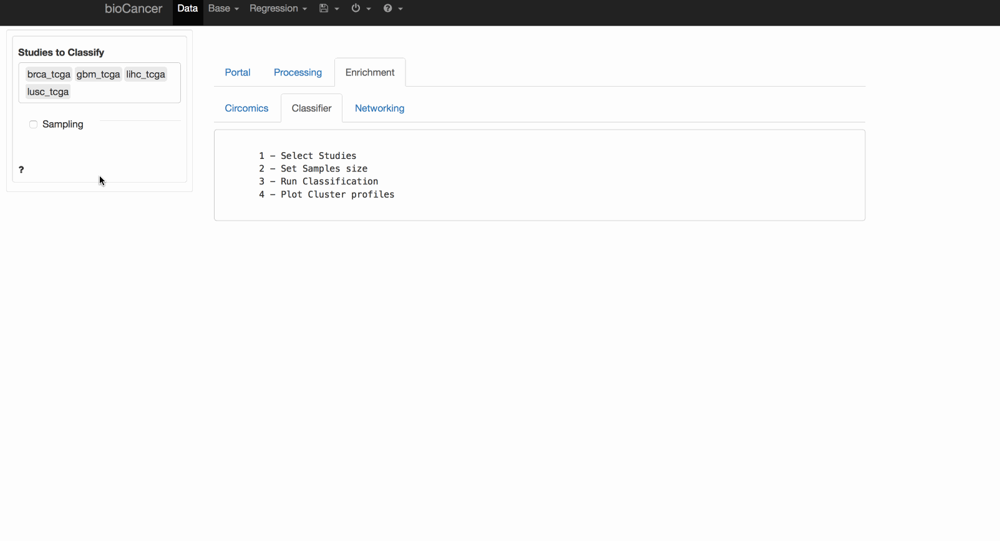

bioCancer- A Shiny App to visualize and analyse interactively Multi-Assays of Cancer Genomic Data.

bioCancer - Interactive Multi-OMICS Cancers Data Visualization and Analysis


r badge_bioc_download("bioCancer, "total", "blue", "total")
http://cranlogs.r-pkg.org/badges/stringr
bioCancer is a browser-based interface for Cancer Genomics Data analysis and visualization developped by R, and based on the Shiny package.
Interactivities
bioCancer is listening user setting. Results are updated immediately when inputs are changed (i.e., no separate dialog boxes).
Context
bioCancer focuses on Cancer Genomics data visualisation and Genes Classifications.
Circomics: Pull User genetic profiles with existing Cancer studies
Preprocessing and Plotting

Genes Classification and Biological terms Clustering
Network modeling example

How to install bioCancer
- Required: R version 3.2 or later
- Required: A modern browser (e.g., Chrome or Safari). Internet Explorer (version 11 or higher) should work as well
- Recommended: Rstudio
bioCancer courant release:
source("https://bioconductor.org/biocLite.R")
biocLite("bioCancer")
bioCancer is under development:
devtools::install_github("kmezhoud/bioCancer")
library("bioCancer")
When bioCancer starts you will see a table of available Cancer Studies. To close the application click on Quit in the Navigation bar and then click the Quit button on the left of the screen. The bioCancer process will stop and the browser window will close (or gray-out).
Documentation
Documentation and tutorials are available in the bioCancer web interface (the ? icons and the Help menu).
Acknowledgment
bioCancer is a collaborative work . Processing panel is adapted from radiant. I would like to thank Dr. Vincent Nijs for sharing his work for R community.
Karim Mezhoud
Data Scientist
My research interests include Data Analysis, Exploration, Visualization and Prediction.